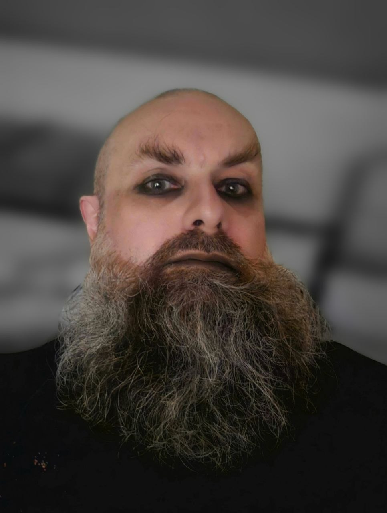
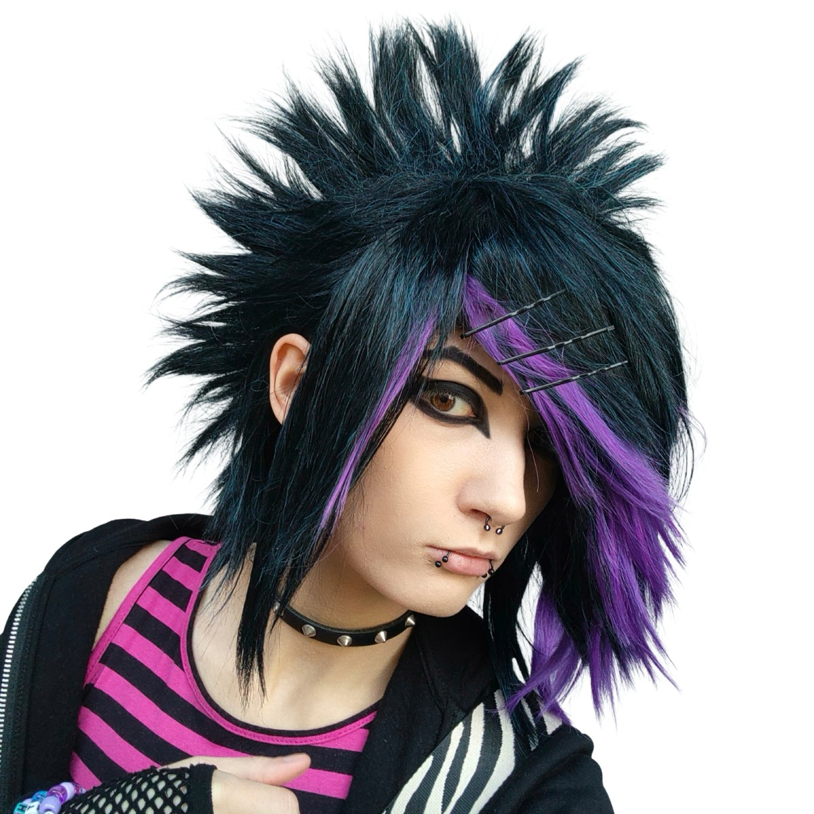
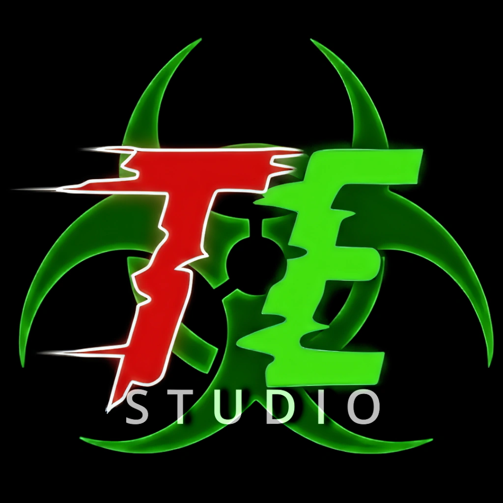

Editorial Team

Mighn Taghor
Focuses on subcultural and journalistic essays, analysis of the independent scene, and ensuring the written word carries true weight and is not subject to corporate devaluation. As a hobby, runs the news and rumors section for the TX2 Unofficial Fansite (tx2.emo-changeling.xyz).
Contact: eic@emo-changeling.xyz | LinkedIn | GitHub

Nico Łach
Frontman and project leader, interview host, and art coordinator. Bridges digital art (Digiart, pigeonification project) with journalism and the emo/scene music subculture. Known under the artistic pseudonyms "Zebroid" and "Vikasiek".
Contact: nico.lach@emo-changeling.xyz | LinkedIn | GitHub

Bartosz Gala
E-zine publisher and technical coordinator. Responsible for funding, technical infrastructure, security, and legal backing for the entire project.
Contact: publisher@toxic-echo.studio | LinkedIn | GitHub